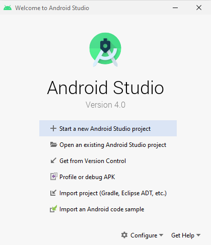
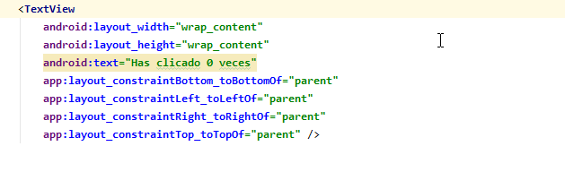

Esta práctica te enseña cómo crear tu primera aplicación para Android. Aprenderás cómo crear un proyecto de Android con Android Studio, y ejecutar una versión depurable de la aplicación.
Desarrollaremos una App que consiste en un contador de clics:

https://github.com/gerardfp/apps
Antes de comenzar, descarga e instala Android Studio
Descomprime el zip y ejecuta el lanzador
- En Android Studio, crea un nuevo proyecto:
- Si todavía no has abierto un proyecto, en la pantalla de bienvenida, haz clic en
Nuevo proyecto .
 - Si has abierto un proyecto, ve a
File >New >New project .
- Elije la plantilla para la
Activity principal de la App. Para esta práctica elije "Empty Activity".

- Rellena los campos de la pantalla.

El proyecto creado es una aplicación básica de "Hello World" que contiene algunos archivos por defecto. Veamos los más importantes:

El archivo de manifiesto describe las características fundamentales de la aplicación y define cada uno de sus componentes. Aquí especificaremos las Activities que tiene nuestra app y los permisos que requiere (Cámara, Contactos, Internet, etc.) |
Contiene la definición de clase para la Activity (pantalla) principal. En este fichero programaremos el comportamiento de esta Activity. |
Este archivo XML define el layout de la actividad, es decir los elementos (widgets) que tiene la pantalla. Por defecto, contiene un elemento |
Android Studio utiliza Gradle para compilar y construir la aplicación. Hay un archivo
Más adelante usaremos este fichero para instalar nuevas bibliotecas y componentes para nuestra App, en el apartado |
Veamos también los subdirectorios Directorio de imágenes. Directorio para los archivos que definen la interfaz de usuario de la aplicación, como Contiene los iconos Lanzadores. Directorio para otros archivos XML que contienen una colección de recursos. En el archivo En el archivo En el archivo |
Este es el aspecto de la App "Hello World":

Ejecutar en un dispositivo real
Configurar el móvil de la siguiente manera:
- Conectar el dispositivo a su equipo de desarrollo con un cable USB.
- Habilitar la depuración USB en el dispositivo móvil, yendo a
Ajustes >Opciones de desarrollador .
Ejecutar la aplicación desde Android Studio de la siguiente manera:
- Selecciona el dispositivo móvil

- Haz clic en Ejecutar
 desde la barra de herramientas.
desde la barra de herramientas.
Android Studio instala la aplicación en el dispositivo conectado y la inicia.
Ejecutar en el emulador
Selecciona el emulador y haz clic en

Si no tienes ningún emulador creado ve a AVD Manager y crea uno:


Selecciona el Hardware y la versión de Android que desees.
En los ficheros XML de la carpeta
Por el momento, en la pantalla
Para editar los ficheros de layout hay dos formas:
- Modo gráfico: permite arrastrar los widgets de la paleta a la pantalla, y modificar sus atributos.
- Modo código: permite modificar directamente el código XML.
Habitualmente, trabajaremos en modo código:
- Haz doble click sobre el fichero
res/layout/activity_main.xml - Haz click en el icono
 (o también Split...)
(o también Split...)

Modificaremos el layout de la siguiente forma:
- El TextView que actualmente contiene el texto "Hello World", lo usaremos para mostrar el contador
- Añadiremos un botón que, al ser pulsado, aumentará el contador
TextView
Para cambiar el texto de un TextView, hay que modificar el atributo
Cambia el valor de este atributo al texto "Has clicado 0 veces"
android:text="Has clicado 0 veces"

Button
Añade también el
<Button android:layout_width="wrap_content" android:layout_height="wrap_content" android:text="Click me!"/>

ConstraintLayout
En el diseño actual del layout podemos ver que la disposición del botón no es la más adecuada:

Quizá quedaría mejor si el botón estuviera dispuesto debajo del TextView...
Para disponer los elementos en un
Podemos ver las constraints como muelles que tiran de un elemento en las cuatro direcciones (arriba, abajo, izquierda y derecha). El elemento queda posicionado en equilibrio entre las fuerzas de los muelles que se han definido.
En el caso del TextView vemos que hay definidas cuatro constraints:

En cada constraint se indica hacia dónde debe tirar el "muelle". Podemos ver vemos que:
- La
constraintBottom tira del TextView hacia la parte inferior (toBottomOf ) de suparent (su elemento padre es el ConstraintLayout). - La
constraintLeft (muelle de la izquierda) tira del TextView hacia la parte izquierda (toLeftOf ) de su parent. - La
constraintRight tira del TextViewtoRightOf parent. - La
constraintTop tira de éltoTopOf parent.

Definiremos las constraints del Button para posicionarlo de esta manera:

La
La
La
Hasta aquí la cosa es sencilla. Basta definir las constraints igual que en el TextView. Estas constraints apuntan todas al elemento padre:

En la
Para hacer referencia al elemento padre hemos visto que podemos usar
Para asignar un identificador a un elemento hay que usar el atributo
android:id="@+id/contadorDeClics"

Ahora ya podemos añadir la
<Button android:id="@+id/augmentarElContador" android:layout_width="wrap_content" android:layout_height="wrap_content" android:text="Click me!" app:layout_constraintBottom_toBottomOf="parent" app:layout_constraintLeft_toLeftOf="parent" app:layout_constraintRight_toRightOf="parent" app:layout_constraintTop_toBottomOf="@+id/contadorDeClics"/>
El código completo del layout quedará así:
app/src/main/res/layout/activity_main.xml
<?xml version="1.0" encoding="utf-8"?> <androidx.constraintlayout.widget.ConstraintLayout xmlns:android="http://schemas.android.com/apk/res/android" xmlns:app="http://schemas.android.com/apk/res-auto" xmlns:tools="http://schemas.android.com/tools" android:layout_width="match_parent" android:layout_height="match_parent" tools:context=".MainActivity"> <TextView android:id="@+id/contadorDeClics" android:layout_width="wrap_content" android:layout_height="wrap_content" android:text="Has clicado 0 veces" app:layout_constraintBottom_toBottomOf="parent" app:layout_constraintLeft_toLeftOf="parent" app:layout_constraintRight_toRightOf="parent" app:layout_constraintTop_toTopOf="parent" /> <Button android:id="@+id/augmentarElContador" android:layout_width="wrap_content" android:layout_height="wrap_content" android:text="Click me!" app:layout_constraintBottom_toBottomOf="parent" app:layout_constraintLeft_toLeftOf="parent" app:layout_constraintRight_toRightOf="parent" app:layout_constraintTop_toBottomOf="@+id/contadorDeClics"/> </androidx.constraintlayout.widget.ConstraintLayout>
Si ejecutas la app, verás el texto y el botón. Sin embargo, cuando clicas en el botón, este no hace nada. No se ha definido el comportamiento de dicho botón.
Para agregar un comportamiento al botón debemos realizarlo en el código Java (o también Kotlin). Escribiremos el código en el fichero

En este fichero hay definida la clase
Este método
En este método lo primero que debes observar es la llamada
Una vez visto esto vayamos al código necesario para nuestro contador. Necesitaremos:
- Una variable
int que vaya almacenando el contador - Programar el Button para que, cada vez que se haga click, augmente el contador y actualice el TextView
Crear la variable para almacenar el número de clicks es la parte más sencilla:
public class MainActivity extends AppCompatActivity { int contador; @Override protected void onCreate(Bundle savedInstanceState) { super.onCreate(savedInstanceState); setContentView(R.layout.activity_main); } }
findViewById
Para programar el comportamiento del Button, y luego actualizar el texto del TextView, necesitaremos tener una referencia a estos dos elementos.
Para ello definiremos una variable para cada elemento y llamaremos al método
public class MainActivity extends AppCompatActivity { int contador; TextView contadorDeClics; Button augmentarElContador; @Override protected void onCreate(Bundle savedInstanceState) { super.onCreate(savedInstanceState); setContentView(R.layout.activity_main); contadorDeClics = findViewById(R.id.contadorDeClics); augmentarElContador = findViewById(R.id.augmentarElContador); } }
Opcionalmente, se puede activar el ViewBinding para no tener que hacer las llamadas a findViewById para vincular los elementos del XML con las variables JAVA.
Imagina que en lugar de 1 botón y 1 textview, tenemos 10 botones y 5 textviews... són 15 variables y 15 llamadas a findViewById !!
Para activar el ViewBinding hay que ir al fichero
app/build.gradle
android {
. . .
viewBinding {
enabled = true
}
buildFeatures {
viewBinding = true
}
}
Luego hay que definir una única variable y a partir de ésta podremos acceder a los elementos XML. También hay que modificar la llamada a setContentView, de la siguiente manera:
public class MainActivity extends AppCompatActivity { ActivityMainBinding binding; @Override protected void onCreate(Bundle savedInstanceState) { super.onCreate(savedInstanceState); // setContentView(R.layout.activity_main); binding = ActivityMainBinding.inflate(getLayoutInflater()); setContentView(binding.getRoot()); } }
De esta forma, para acceder al Button y al TextView (y los otros elementos que tuviésemos) podemos hacerlo directamente a través de la variable
OnClickListener
Un vez tenemos vinculados el Button y el TextView, el siguiente paso es programar el botón para que responda al CLICK (aumentando el contador y mostrando el texto en el TextView).
Para que el boton responda al evento CLICK, hay que hacer una llamada al método setOnClickListener y pasarle un objeto de clase View.OnClickListener. En el método onClick de este objeto programaremos lo que queremos que se haga cuando se pulse el botón:
public class MainActivity extends AppCompatActivity { int contador; TextView contadorDeClics; Button augmentarElContador; @Override protected void onCreate(Bundle savedInstanceState) { super.onCreate(savedInstanceState); setContentView(R.layout.activity_main); contadorDeClics = findViewById(R.id.contadorDeClics); augmentarElContador = findViewById(R.id.augmentarElContador); augmentarElContador.setOnClickListener(new View.OnClickListener() { @Override public void onClick(View view) { // aumentar el contador // mostrar el contador en el TextView } }); } }

Ahora, dentro del método
Para cambiar el texto hacemos una llamada al método
Finalmente, el código de la aplicación queda así:
app/src/main/java/com/company/contadordeclics/MainActivity.java
public class MainActivity extends AppCompatActivity { int contador; TextView contadorDeClics; Button augmentarElContador; @Override protected void onCreate(Bundle savedInstanceState) { super.onCreate(savedInstanceState); setContentView(R.layout.activity_main); contadorDeClics = findViewById(R.id.contadorDeClics); augmentarElContador = findViewById(R.id.augmentarElContador); augmentarElContador.setOnClickListener(new View.OnClickListener() { @Override public void onClick(View view) { contador++; contadorDeClics.setText("Has clicado " + contador + " veces"); } }); } }
Si has usado ViewBinding, el código quedaría así:
public class MainActivity extends AppCompatActivity { int contador; ActivityMainBinding binding; @Override protected void onCreate(Bundle savedInstanceState) { super.onCreate(savedInstanceState); binding = ActivityMainBinding.inflate(getLayoutInflater()); setContentView(binding.getRoot()); binding.augmentarElContador.setOnClickListener(new View.OnClickListener() { @Override public void onClick(View view) { contador++; binding.contadorDeClics.setText("Has clicado " + contador + " veces"); } }); } }
 P1-MultiContador
P1-MultiContador
Desarrolla una app llamada "P1 MultiContador" que haga la función de un contador de personas.

La app debe tener 4 contadores independientes y un contador global (que lleve la suma de los 4 contadores).
Debe haber un botón de reset para cada contador y un botón de reset global que resetee los 4 contadores a la vez.
Puedes utilizar la siguiente app como modelo para el multicontador

En la siguiente imagen puedes ver las constraints que se han definido en el layout:

Valida la disposición de los elementos en el ConstraintLayout utilizando el "Layout Validator":